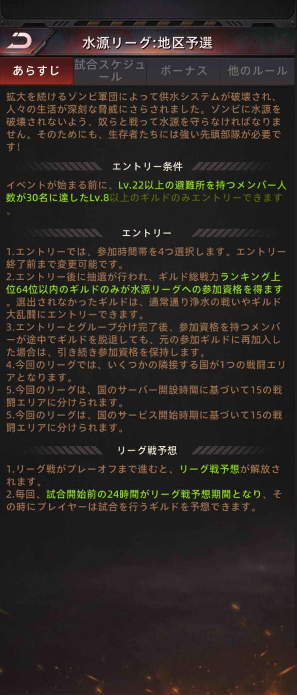
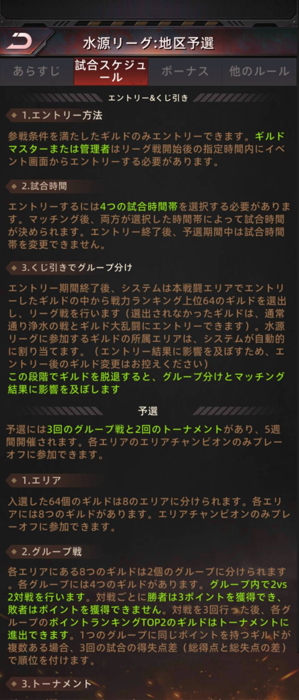
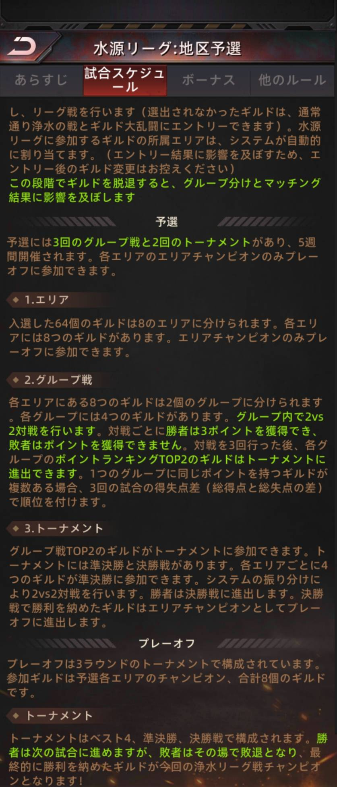
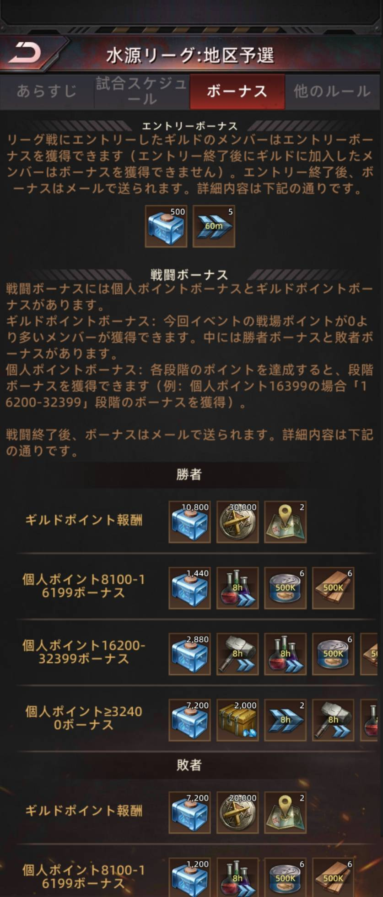
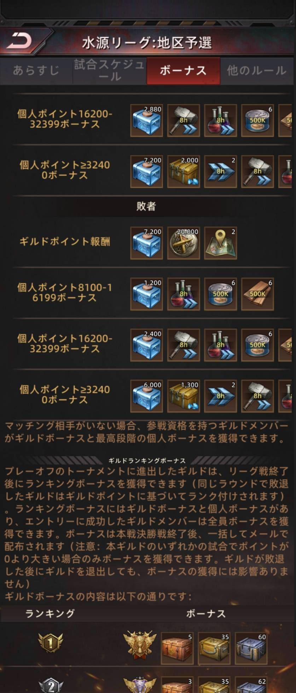
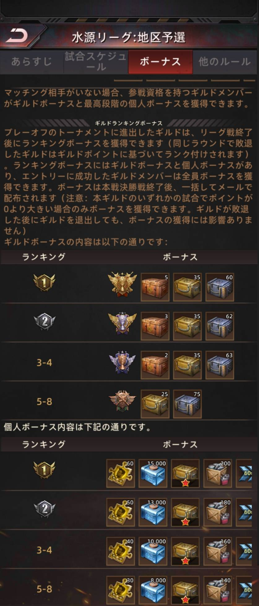
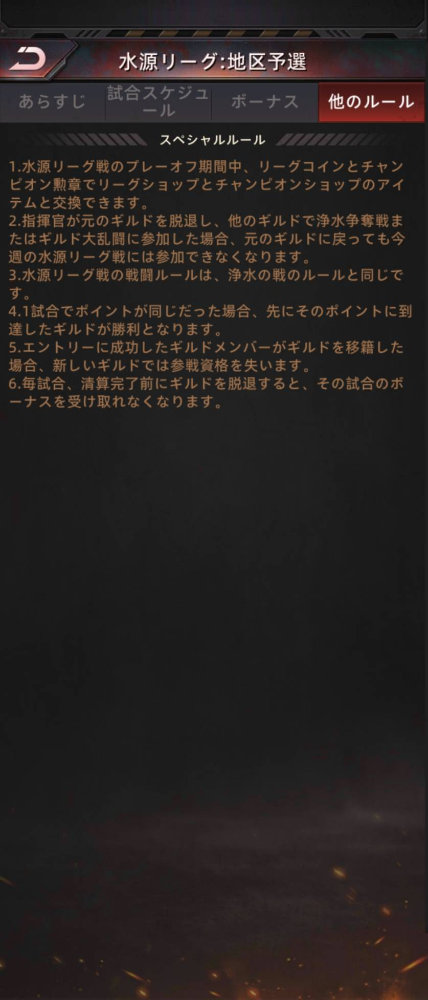

ゲーム内の説明は長くて分かりにくいので、「結局なにをすればいいの？」が分かる順番に並べ直しました。
ゲーム内の画面では「水源リーグ」、公式のお知らせや攻略記事では「浄水リーグ戦」と呼ばれています。同じイベントです。
64 ギルドがふるいにかけられて、最後に 1 ギルドが残る大会です。自分のギルドがどこにいるかを下の図で追ってください。
自分のギルドが出ていなくても「予想（ベット）」で参加できます（プレーオフから）。1 試合の戦い方は、いつもの「浄水の戦」と同じです。
グループ戦 3 回 ＋ エリア内トーナメント 2 回。各エリアの優勝ギルドだけが次へ進めます。
8 エリアのチャンピオンによる一発勝負のトーナメント。ベスト 4・準決勝・決勝の 3 ラウンドです。
いつもどおり「浄水の戦」や「ギルド大乱闘」にエントリーできます。損はありません。
条件 1ギルドのレベルが 8 以上
条件 2避難所レベル 22 以上のメンバーが 30 名以上
※ イベントが始まる前の時点で満たしている必要があります。
だれがギルドマスターか管理者がイベント画面から申し込みます。一般メンバーは申し込めません。
いつリーグ戦が始まった後の決められた期間内。過ぎると申し込めません。
戦闘エリア（＝どの国どうしで戦うか）は、国のサービス開始時期をもとに 15 に分けられ、近い国どうしが同じエリアになります。
同じグループの 4 ギルドが、総当たりで 1 回ずつ戦います（1 試合はギルド対ギルドの 1 対 1）。
例：エリア 1・グループ A（4 ギルド）
3 試合が終わった時点で、点数の上位 2 ギルドがエリア内トーナメントへ。同点なら「得失点差」で順位を決めます。
3 試合で取った「戦場ポイント」の合計から、相手に取られたポイントの合計を引いた差で順位をつけます。
つまり、勝つだけでなく大差で勝つ・負けても点差を小さくすることが大事です。1 試合の中で同点なら、先にその点に達したギルドの勝ちです。
リーグ戦の試合そのものは、毎週の「浄水の戦（浄水争奪戦）」とまったく同じルールです。専用マップで拠点を取り合い、1 時間でギルドポイントが多いほうの勝ちです。
数値はギルドのグレードや時期で変わることがあります。「どれが高いか」の比較として見てください。
| 拠点 | 最初に占領 | 持ち続ける（1 分ごと） | 輸送隊が通る | おまけの効果 |
|---|---|---|---|---|
| 末日要塞 | 6,000 | 1,200 | 15,000 | なし |
| 軍事基地 | 3,000 | 600 | 9,000 | 味方の部隊の攻撃力アップ |
| 戦地病院 | 3,000 | 600 | 9,000 | 治療の速さアップ |
| 見張り塔 | 1,200 | 240 | 9,000 | なし |
| 支援基地 | 1,200 | 240 | 9,000 | ギルド全体のワープ回数が増える |
上はギルドポイント。個人ポイントは別に数えられ（要塞 1,800／病院・基地 1,500／塔・支援基地 1,200 など）、個人のボーナスはこの個人ポイントで決まります。
ボーナスは 3 種類あります。どれもメールで届きます（個人ポイントのボーナスだけは、通常の浄水の戦では画面から受け取る形です）。
申し込みに成功したギルドのメンバー全員に、エントリー終了後にメールで届きます。
※ エントリー終了後に加入したメンバーはもらえません。
ギルドポイント報酬：その試合で戦場ポイントが 0 より多かった人がもらえる。勝ちと負けで内容が違う。
個人ポイント報酬：自分の個人ポイントの段階に応じてもらえる。
プレーオフに進んだ 8 ギルドが、最終順位（1 位／2 位／3〜4 位／5〜8 位）に応じてもらえる。決勝が終わったあとにまとめて届く。
例：個人ポイントが 16,399 なら「16,200〜32,399」の段階のボーナス
| ボーナス | 勝ったとき | 負けたとき |
|---|---|---|
| ギルドポイント報酬（水のアイテム） | 10,800 | 7,200 |
| 個人 8,100〜16,199（水のアイテム） | 1,440 | 1,200 |
| 個人 16,200〜32,399（水のアイテム） | 2,880 | 2,400 |
| 個人 32,400 以上（水のアイテム） | 7,200 | 6,000 |
そのほかに加速アイテム・資源・宝箱などが付きます。品目はゲーム内の「ボーナス」の画面（下の原文の写真）でご確認ください。
自分のギルドが出ていなくても楽しめる仕組みです。「どちらのギルドが勝つか」を予想して、当たればコインが増えます。
リーグ戦の最中にギルドを抜けたり移ったりすると、参加資格やボーナスを失います。これがいちばん多い失敗です。
新しいギルドでは参戦資格がありません。元のギルドに戻れば資格は保てます（グループ分け完了後の話）。
元のギルドに戻っても、その週の水源リーグには参加できません。
その試合のボーナスがもらえません。
ギルドの戦力が変わり、グループ分けとマッチングの結果に影響します。この期間のギルド変更は控えるよう公式に書かれています。
後から入った人にはエントリーボーナスは届きません。
| あなたの戦力 | 役割 | やること |
|---|---|---|
| 相手ギルドの上位 10 人に入る | 攻め | 偵察→編成→出撃を素早く。輸送隊の通り道の拠点を優先。 |
| それ以外 | 守り | 安全地帯から、味方の拠点へ増援。空き部隊は必ず拠点へ。 |
正確な文言と、ボーナスの品目はこちらでご確認ください。タップすると大きく表示されます。







画面はゲーム「パズル＆サバイバル」（37GAMES）の説明画面です。ルールは運営の更新で変わることがあります。最新はゲーム内の説明と公式のお知らせをご確認ください。